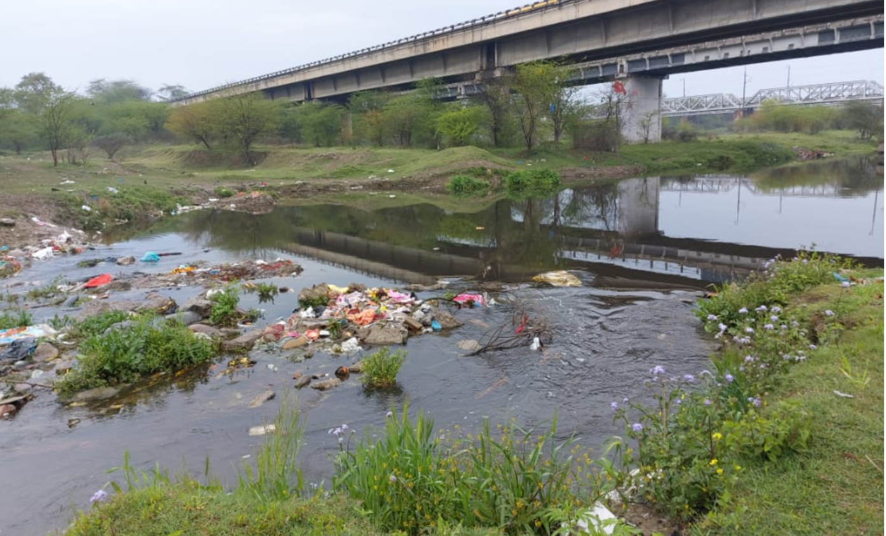
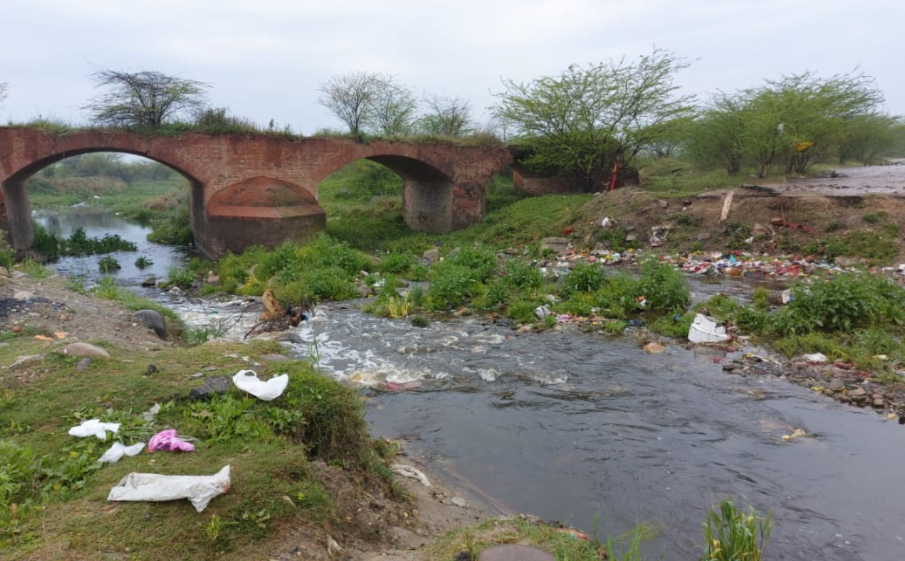
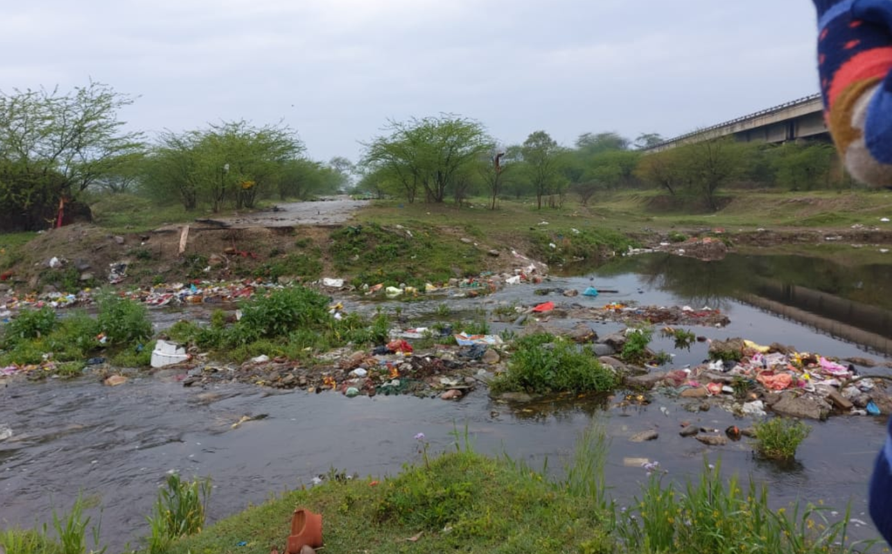
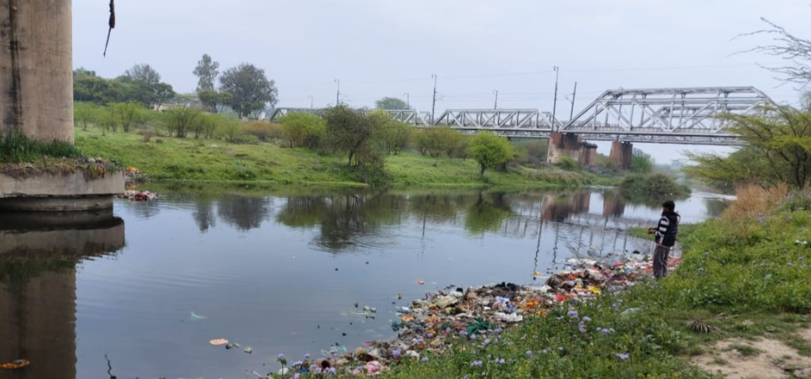

How Does Water Pollution Affect Biodiversity?
Water pollution is one of the biggest threats to humanity and the ecosystem. The Earth is 71 percent water, and the oceans hold 96.5 percent of this water.
And with all this much, it’s easy to think we could never run out of this resource. But that’s not the case, especially considering the current rate of pollution.
Water pollution is a common issue that’s greatly impacting our quality of life and the safety of our planet. But what are some of the effects it has on our biodiversity?
How Does Water Pollution Impact Biodiversity?
Many of the products we enjoy are polluting water. Examples of these pollutants include thermal, radioactive, organic and inorganic contaminants, pathogens, and suspended solids.
These pollutants come from various sources, but the chemical industry is among the largest sources of water pollution, accounting for both organic and inorganic waste.
Biodiversity is important because it can provide for basic human needs like fuel, shelter, food, and medicine.
Now, water pollution releases harmful substances into water bodies like rivers, lakes, and oceans. Anything that affects the typical functioning of the ecosystem is a pollutant.
Chemicals, trash, gases, microorganisms, sediments, petroleum, fertilizers, and even radioactive energy are some of the most common materials that pollute our water bodies.
Out-of-place pollutants alter aquatic environments, harming living creatures and biodiversity. The impact varies with the concentration and toxicity of the substances.
And although water pollution happens in our water bodies, the toxic substances will spread to other domestic and commercial areas, such as crops, animals, and even our drinking water.
How Does Water Pollution Affect the Environment?
Water is a vital resource for biodiversity and human survival. Virtually every living creature needs water to survive. But despite the central role it plays in our survival, pollution remains a significant threat to this crucial resource.
The effects of water pollution on the environment are significant, and they include:
1.It Affects Aquatic Flora and Fauna
2.Eutrophication
3.Toxic Algae Blooms
4.Increased Waterborne Diseases
5.Destruction of The Ecosystem
6.Death of Animals
7.Loss of Entire Species